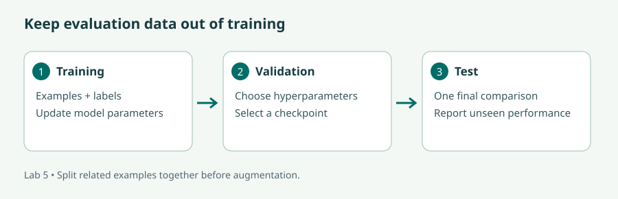
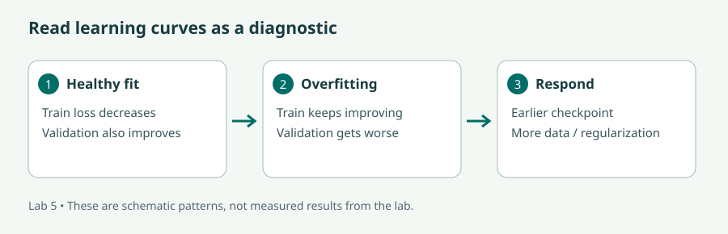

Fine-tuning a model with the Trainer API · Hugging Face
Watch on YouTube · Also embedded in the official course lesson. Identify the dataset, model, training arguments, and evaluation function.
Prepare trustworthy datasets, adapt pretrained models, and compare results on examples they have never seen.
Read the lecture or follow the video route, then complete the illustrated lab and the checks. The videos cover selected concepts; the short bridge notes identify the remaining material. Allow six learning hours per day, with breaks in addition.
Audience: Data Scientists and Machine Learning Practitioners; NLP Engineers and Researchers; Software Developers and Engineers; AI Enthusiasts; AI Product Managers and Business Analysts; Professionals in Linguistics and Language Processing.
New to Python? Before starting, practise defining a function, importing a package, reading a text file, using a dictionary, and creating a virtual environment. Later modules provide a short bridge back to these skills.
| # | Curriculum objective | Where to learn it |
|---|---|---|
| 1 | Gain a deep understanding of the principles and methodologies behind fine-tuning Large Language Models (LLMs), including the transfer learning paradigm, model architecture selection, and the importance of task-specific adaptation | Lesson 1 + lab |
| 2 | Learn effective strategies for data preprocessing, augmentation, and formatting to optimise LLMs for specific tasks and domains, ensuring high-quality input data for fine-tuning | Lesson 2 + lab |
| 3 | Explore different pre-trained LLM architectures and variants, understand their strengths and weaknesses, and learn how to select and configure the most suitable model for fine-tuning tasks | Lesson 3 + lab |
| 4 | Master fine-tuning techniques for a diverse range of natural language processing (NLP) tasks, including text classification, language modeling, named entity recognition, sentiment analysis, and more, adapting pre-trained models to specific task requirements | Lesson 4 + lab |
| 5 | Develop proficiency in hyperparameter tuning and optimisation techniques to maximise the performance and efficiency of fine-tuned LLMs, including learning rates, batch sizes, and regularisation strategies | Lesson 5 + lab |
| 6 | Learn how to effectively evaluate the performance of fine-tuned LLMs using appropriate evaluation metrics and techniques, ensuring robust and reliable model performance across different tasks and datasets | Lesson 6 + lab |
| 7 | Identify common challenges and pitfalls encountered during the fine-tuning process, such as overfitting, data imbalance, and domain shift, and develop strategies to mitigate them effectively | Lesson 7 + lab |
| 8 | Gain hands-on experience in fine-tuning LLMs for real-world NLP applications and use cases, through practical exercises and case studies covering a variety of domains and tasks | Lesson 8 + lab |
90 min: transfer learning and architectures.
90 min: dataset preparation.
120 min: sentiment training lab.
60 min: curves and error analysis.
90 min: LoRA language-model lab.
60 min: named-entity lab.
90 min: hyperparameter comparison.
120 min: evaluation and model report.
Pretraining learns reusable representations from broad data. Fine-tuning starts from those parameters and updates some or all of them for a narrower objective. Think of an experienced reader learning your organisation's document categories: the reader does not relearn the alphabet, but needs examples of what the categories mean.
Training repeatedly computes a prediction, compares it with a target using a loss function, calculates gradients, and updates parameters. The learning rate controls update size. A batch contains several examples used in an update; an epoch is a pass over the training data. A lower training loss means the model fits those training examples better. It does not by itself establish better performance on new cases.
Choose fine-tuning when a repeated behaviour or task benefits from many representative examples: consistent classification, domain terminology, or a desired answer style. Use retrieval when the primary need is access to changing facts with identifiable sources. Prompting, RAG, and fine-tuning can be combined, but each should address a diagnosed failure.
Write a label guide and inspect disagreements. If one annotator treats “useful but too fast” as positive and another as negative, the model receives contradictory supervision. Remove duplicates and unintended personal information, verify usage permissions, and record where examples came from. Normalize whitespace when appropriate, but do not erase punctuation or casing when it carries task information.
Split data into training, validation, and test sets before augmentation. Keep related examples together: multiple messages from one conversation, paraphrases of one record, or documents from the same source can leak information across a naive random split. Use the validation set to choose settings. Reserve the test set for a final comparison after those choices are fixed.
Augmentation can add controlled paraphrases or realistic noise, but it can also change the label. “I liked it” and “I hardly liked it” are not equivalent sentiment examples. Review generated examples and augment only the training split. Check class balance and domain coverage before assuming more examples will solve the problem.
| Architecture | Useful output | Tradeoff |
|---|---|---|
| Encoder, such as DistilBERT | One class per text or one label per token | Efficient for understanding tasks; not an autoregressive chat generator |
| Decoder, such as a causal language model | A continuation generated token by token | Flexible generation; output needs grounding and validation |
| Encoder–decoder, such as T5 | An output sequence conditioned on an input sequence | Useful for translation and summarization; task formatting matters |
Check language coverage, context length, model licence, model-card limitations, and hardware before selecting a checkpoint. The small SmolLM2-135M model card describes the decoder used in our mechanics exercise. Small checkpoints keep classroom training manageable; production selection requires representative evaluation.
Full fine-tuning updates all selected model parameters and requires storage for gradients and optimizer state. LoRA freezes most original weights and trains small low-rank updates. This reduces trainable parameter and optimizer-state costs; base-model weights and activations still consume memory. Quantized adapter training is another option, but hardware and library compatibility require care. See the PEFT quicktour for adapter configuration and saving.
Text classification assigns a label to a sequence. Sentiment analysis is one example; course-ticket routing is another. A classification head outputs one score per category, and cross-entropy encourages the correct category to receive a higher score.
Causal language modeling predicts later tokens from earlier ones. The training targets are token IDs shifted relative to the input. For instruction tuning, format messages using the model's expected chat template and decide which tokens contribute to loss. A full-text language-model objective also trains on the prompt, while a completion-only objective trains only on the desired answer portion. Our small exercise intentionally uses full-text causal modeling.
Named entity recognition assigns labels to spans such as a person's or organisation's name. In a BIO scheme, B starts an entity, I continues it, and O means outside. Tokenization may split one word into several subwords. Align labels carefully and mask padding and ignored tokens with -100 so they do not affect the loss. The lab labels the first subword and ignores later pieces. See the official token-classification recipe for this alignment convention.
A very high learning rate can destroy useful pretrained representations; a very low one may barely change behaviour. Compare a small set of rates while keeping data, seed, and evaluation fixed. Batch size affects gradient noise and memory. Gradient accumulation approximates a larger effective batch by collecting gradients across smaller batches: one device with batch size 4 and accumulation 2 processes 8 examples per optimizer update.
Weight decay discourages overly large weights. Dropout removes a random subset of activations during training to reduce reliance on particular paths. Early stopping or selecting the best validation checkpoint can limit overfitting. Sequence length is also a modeling choice: shortening it saves memory but may remove decisive evidence near the end of a review.
Accuracy is the fraction of correct labels. Precision asks how many predicted positives are correct; recall asks how many actual positives are found. F1 balances precision and recall; macro-F1 averages across classes equally, which can reveal failures hidden by a dominant class. Inspect a confusion matrix to see which mistakes occur.
For language modeling, validation loss and perplexity measure predictive fit under a particular tokenization and dataset. Lower perplexity does not automatically mean a better assistant. For NER, evaluate complete entity spans and types: token accuracy can look high because most tokens are O. Our tiny NER script prints token macro-F1 for visibility; a real NER report also needs entity-level precision, recall, and F1.
Report the dataset split, sample size, seed, checkpoint, and evaluation protocol. The Hugging Face Trainer lesson explains where training arguments and evaluation enter the loop. The lab deliberately keeps a separate test subset.
Overfitting: training loss improves while validation worsens. Try fewer epochs, more representative data, stronger regularization, or fewer trainable parameters. Imbalance: a classifier predicts the majority class and looks accurate overall. Inspect per-class metrics and consider training-set sampling or weighted loss. Never rebalance the final test set merely to make the score attractive.
Domain shift: a model trained on movie reviews may misread course reviews. Test on the target domain before deploying. Data leakage: near-duplicate records inflate apparent performance. Group and deduplicate before splitting. Memory exhaustion: reduce batch size or sequence length first, then consider accumulation or adapters. Record the tradeoff rather than silently changing the experiment.
A trained checkpoint is not the whole deliverable. Include its tokenizer, preprocessing rules, label mapping, dataset provenance, evaluation results, intended use, and known limitations. Adapter checkpoints require the correct base model as well as the adapter. Record both revisions. The handover should explain what evidence supports use on new data and what a human should review.
Across real applications, adapt this method rather than reusing labels blindly. A support-ticket classifier needs business-specific categories; sentiment needs a clear treatment of mixed reviews; NER needs an entity definition; a domain-writing model needs examples reflecting the desired style and factual constraints.
Watch on YouTube · Also embedded in the official course lesson. Identify the dataset, model, training arguments, and evaluation function.
Bridge: read Lessons 2–7 for split hygiene, architecture selection, LoRA, NER, and task-specific evaluation. Older videos may use the former tokenizer Trainer parameter; these lab files use processing_class with the stated Transformers version range.
Advanced video alternative for the training workflow: watch data formatting, TRL and LoRA configuration, and evaluation. This uses coding-agent traces rather than the small datasets in our lab. Return to the task-specific checks for sentiment and NER. Watch on YouTube.
Use Python 3.11 and several GB of free disk space. A CUDA-capable GPU makes training substantially more comfortable; a CPU can run these small exercises slowly. Runtime and memory vary by hardware. Cloud notebooks are an option, but GPU access and charges depend on the service. No hosted inference key is required; packages, datasets, and weights download from the internet.
Stuck? See the worked solution for this step →
python -m venv .venv-train
.venv-train\Scripts\python.exe -m pip install -r module05/requirements.txt
.venv-train\Scripts\python.exe -c "import torch; print('CUDA available:', torch.cuda.is_available())"False means the installed runtime will use the CPU unless another supported device is configured. Do not assume installing a package enables GPU support; use the PyTorch installer appropriate for your system if needed. Read the IMDb dataset card linked from its repository before downloading and using it.
Stuck? See the worked solution for this step →
The script samples 800 training reviews and splits them into 640 training and 160 validation examples. A separate 200-example subset of IMDb's test split is reserved for the final run. Inspect examples and class counts before training. The random task head is an initialization baseline; also compare against a majority-class baseline when interpreting scores.

Stuck? See the worked solution for this step →
.venv-train\Scripts\python.exe module05/train_sentiment.py --lr 0.00002 --epochs 1 --output outputs/sentiment-aExpect an initial warning about a newly initialized classification head: this head has not learned the task yet. The script prints validation metrics before and after training, then saves the chosen model and tokenizer. Record actual values rather than copying an expected score.
Download module05/train_sentiment.py
"""Small IMDb experiment with train/validation/test separation."""
import argparse
import numpy as np
from datasets import load_dataset
from sklearn.metrics import accuracy_score, f1_score, confusion_matrix
from transformers import AutoTokenizer, AutoModelForSequenceClassification, DataCollatorWithPadding, Trainer, TrainingArguments, set_seed
def main():
parser = argparse.ArgumentParser()
parser.add_argument("--lr", type=float, default=2e-5)
parser.add_argument("--epochs", type=int, default=1)
parser.add_argument("--output", default="outputs/sentiment")
parser.add_argument("--final-test", action="store_true")
args = parser.parse_args()
set_seed(42)
checkpoint = "distilbert/distilbert-base-uncased"
raw = load_dataset("stanfordnlp/imdb")
subset = raw["train"].shuffle(seed=42).select(range(800))
split = subset.train_test_split(test_size=0.2, seed=42, stratify_by_column="label")
tokenizer = AutoTokenizer.from_pretrained(checkpoint)
def tokenize(batch):
return tokenizer(batch["text"], truncation=True, max_length=128)
tokenized = split.map(tokenize, batched=True)
model = AutoModelForSequenceClassification.from_pretrained(
checkpoint, num_labels=2,
id2label={0: "NEGATIVE", 1: "POSITIVE"}, label2id={"NEGATIVE": 0, "POSITIVE": 1})
def metrics(pred):
logits, labels = pred
guesses = np.argmax(logits, axis=-1)
return {"accuracy": accuracy_score(labels, guesses), "macro_f1": f1_score(labels, guesses, average="macro")}
settings = TrainingArguments(
output_dir=args.output, learning_rate=args.lr, num_train_epochs=args.epochs,
per_device_train_batch_size=4, per_device_eval_batch_size=8,
gradient_accumulation_steps=2, weight_decay=0.01,
eval_strategy="epoch", save_strategy="epoch", save_total_limit=1,
load_best_model_at_end=True, metric_for_best_model="macro_f1",
report_to="none", seed=42, logging_steps=20,
)
trainer = Trainer(model=model, args=settings, train_dataset=tokenized["train"],
eval_dataset=tokenized["test"], processing_class=tokenizer,
data_collator=DataCollatorWithPadding(tokenizer), compute_metrics=metrics)
print("Untrained task-head validation:", trainer.evaluate())
trainer.train()
print("Tuned validation:", trainer.evaluate())
trainer.save_model(args.output)
tokenizer.save_pretrained(args.output)
if args.final_test:
test = raw["test"].shuffle(seed=17).select(range(200)).map(tokenize, batched=True)
result = trainer.predict(test)
print("Final held-out test:", result.metrics)
print("Confusion matrix (rows=true, columns=predicted):")
print(confusion_matrix(result.label_ids, result.predictions.argmax(-1)))
if __name__ == "__main__":
main()
If memory is exhausted, reduce the per-device batch size to 2. If training is too slow, run a mechanics trial with a smaller subset, clearly label it as such, and retain a larger evaluation experiment for later. Do not compare runs that used different subsets as if only the learning rate changed.
Stuck? See the worked solution for this step →
Run a second experiment using --lr 0.00005 --epochs 1 --output outputs/sentiment-b. Compare validation macro-F1, loss, runtime, and errors. Choose the setting before looking at test metrics. Rerun that fixed configuration with a new output directory and --final-test to obtain the held-out test metrics and confusion matrix. If randomness or hardware changes results, report that variation.

Extension: increase epochs to 3 using validation only, plot training and validation loss from the Trainer logs, and mark where you would stop. Write down why “more epochs” is not always better.
Stuck? See the worked solution for this step →
Run .venv-train\Scripts\python.exe module05/train_lm.py. It trains adapters on eight synthetic Python/AI definitions and evaluates two separate definitions. Examine the printed trainable-parameter count and before/after validation loss. Eight examples and two validation items demonstrate the pipeline, not reliable task improvement.
"""LoRA causal-LM smoke exercise on synthetic training text, separate validation text."""
import math
from datasets import Dataset
from peft import LoraConfig, TaskType, get_peft_model
from transformers import AutoTokenizer, AutoModelForCausalLM, Trainer, TrainingArguments, DataCollatorForLanguageModeling, set_seed
set_seed(42)
checkpoint = "HuggingFaceTB/SmolLM2-135M"
tokenizer = AutoTokenizer.from_pretrained(checkpoint)
tokenizer.pad_token = tokenizer.eos_token
model = AutoModelForCausalLM.from_pretrained(checkpoint)
model = get_peft_model(model, LoraConfig(task_type=TaskType.CAUSAL_LM, r=8,
lora_alpha=16, lora_dropout=0.05, target_modules=["q_proj", "v_proj"]))
model.print_trainable_parameters()
train = Dataset.from_dict({"text": [
f"Question: What is {topic}? Answer: {answer}{tokenizer.eos_token}"
for topic, answer in [
("a dictionary", "A Python mapping from keys to values."),
("a list", "An ordered collection of values."),
("a function", "A reusable block of code with inputs and outputs."),
("an embedding", "A vector used to represent an item."),
("retrieval", "Finding relevant evidence for a question."),
("validation", "Checking performance on examples excluded from training."),
("a token", "A unit used to represent text to a language model."),
("a prompt", "The input and instructions given to a model."),
]]})
validation = Dataset.from_dict({"text": [
"Question: What is a tuple? Answer: An ordered immutable sequence." + tokenizer.eos_token,
"Question: What is a set? Answer: A collection of distinct elements." + tokenizer.eos_token]})
def encode(batch):
return tokenizer(batch["text"], truncation=True, max_length=128)
train = train.map(encode, batched=True, remove_columns=["text"])
validation = validation.map(encode, batched=True, remove_columns=["text"])
trainer = Trainer(model=model, processing_class=tokenizer,
args=TrainingArguments(output_dir="outputs/lm", num_train_epochs=1,
learning_rate=2e-4, per_device_train_batch_size=2, per_device_eval_batch_size=2,
eval_strategy="epoch", save_strategy="no", report_to="none", seed=42),
train_dataset=train, eval_dataset=validation,
data_collator=DataCollatorForLanguageModeling(tokenizer=tokenizer, mlm=False))
before = trainer.evaluate()["eval_loss"]
trainer.train()
after = trainer.evaluate()["eval_loss"]
print({"before_loss": before, "after_loss": after,
"before_perplexity": math.exp(before), "after_perplexity": math.exp(after)})
model.save_pretrained("outputs/lm-adapter")
tokenizer.save_pretrained("outputs/lm-adapter")
print("Adapter saved. Eight examples demonstrate mechanics, not generalization.")
The output contains an adapter, not a complete standalone model. Reload it using the same base checkpoint plus PeftModel.from_pretrained(base_model, "outputs/lm-adapter"). Compare a fixed prompt before and after adaptation. The causal language-modeling guide explains the next-token training task.
Stuck? See the worked solution for this step →
Run .venv-train\Scripts\python.exe module05/train_ner.py. Before running it, annotate “Maya works at North College” by hand: B-PER, O, O, B-ORG, I-ORG. Inspect how the script maps these word labels to tokenizer positions.
Download module05/train_ner.py
"""Tiny NER lab: align word labels to subword tokens; train a token head."""
import numpy as np
from datasets import Dataset
from sklearn.metrics import f1_score
from transformers import AutoTokenizer, AutoModelForTokenClassification, DataCollatorForTokenClassification, Trainer, TrainingArguments, set_seed
set_seed(42)
labels = ["O", "B-PER", "B-ORG", "I-ORG"]
tokenizer = AutoTokenizer.from_pretrained("distilbert/distilbert-base-uncased")
train = Dataset.from_dict({
"tokens": [["Maya", "works", "at", "North", "College"], ["Leo", "joined", "South", "School"], ["Aisha", "teaches", "Python"], ["Ravi", "visits", "East", "Academy"]],
"tags": [[1, 0, 0, 2, 3], [1, 0, 2, 3], [1, 0, 0], [1, 0, 2, 3]]})
validation = Dataset.from_dict({"tokens": [["Elena", "joined", "West", "College"], ["Chen", "teaches", "Python"]], "tags": [[1, 0, 2, 3], [1, 0, 0]]})
def align(batch):
encoded = tokenizer(batch["tokens"], is_split_into_words=True, truncation=True)
aligned = []
for i, tags in enumerate(batch["tags"]):
previous = None
row = []
for word in encoded.word_ids(batch_index=i):
row.append(tags[word] if word is not None and word != previous else -100)
previous = word
aligned.append(row)
encoded["labels"] = aligned
return encoded
def metrics(pred):
logits, targets = pred
guesses = np.argmax(logits, axis=-1)
valid = targets != -100
return {"token_macro_f1": f1_score(targets[valid], guesses[valid], average="macro", zero_division=0)}
model = AutoModelForTokenClassification.from_pretrained("distilbert/distilbert-base-uncased",
num_labels=4, id2label=dict(enumerate(labels)), label2id={s:i for i,s in enumerate(labels)})
trainer = Trainer(model=model, processing_class=tokenizer,
args=TrainingArguments(output_dir="outputs/ner", num_train_epochs=1,
per_device_train_batch_size=2, learning_rate=2e-5, eval_strategy="epoch",
save_strategy="no", report_to="none", seed=42),
train_dataset=train.map(align, batched=True, remove_columns=train.column_names),
eval_dataset=validation.map(align, batched=True, remove_columns=validation.column_names),
data_collator=DataCollatorForTokenClassification(tokenizer), compute_metrics=metrics)
print("Before:", trainer.evaluate())
trainer.train()
print("After:", trainer.evaluate())
trainer.save_model("outputs/ner")
tokenizer.save_pretrained("outputs/ner")
Compare the model's entity spans on the two validation sentences with the gold spans. Count exact span-and-type matches manually: precision = matching predicted entities / all predicted entities; recall = matching predicted entities / all gold entities. This shows why token macro-F1 alone is incomplete. Four training sentences cannot support a production NER claim.
The solutions specify correct setup, data handling, calculations, and interpretation. They do not promise particular training metrics. The three complete training scripts are available below and in the lab archive.
Use the .venv-train interpreter for installation and training. A successful package check is:
.venv-train\Scripts\python.exe -c "import torch, transformers, datasets, peft; print('Imports OK'); print('CUDA available:', torch.cuda.is_available())"CUDA available: False does not mean the Python program is broken; the exercises can run on CPU, though slowly. An import failure means the environment is incomplete. A download failure means required weights or data are unavailable; neither is a model-quality result.
For out-of-memory errors, first reduce the per-device batch size. Record any change to sequence length or dataset size because those changes also affect the comparison. Use a separate output directory for each experiment.
The script samples 800 examples from IMDb's training split and uses an 80/20 division: 640 training examples and 160 validation examples. Its final-test option uses 200 examples from IMDb's separate test split. It does not use those test examples to choose the learning rate.
After split is created, inspect counts with:
from collections import Counter
for name, dataset in split.items():
print(name, len(dataset), Counter(dataset["label"]))
counts = Counter(split["test"]["label"])
print("Validation majority-class accuracy:", max(counts.values()) / sum(counts.values()))The locally named split["test"] is the validation subset of the sampled training data; the final IMDb test split is separate. The initialization baseline uses a pretrained encoder with a newly initialized classification head, not an already trained sentiment classifier.
Reference solution: train_sentiment.py. Tokenization truncates reviews to 128 tokens; the collator pads batches; the Trainer updates the model; validation selects the best saved checkpoint. Both the model and tokenizer are saved to the specified output directory.
The new-head warning is expected because the base checkpoint was not trained with this exact classification head. A warning is different from a failed training run. Completion evidence includes before/after validation metrics and saved model/tokenizer files, not just decreasing training loss.
For a single device, batch size 4 and gradient accumulation 2 give an effective batch of 8 examples per optimizer update, apart from a possible smaller final batch. If validation fails on an argument name, confirm that the environment uses the stated dependency range and the supplied script rather than mixing an older tutorial's API with newer code.
Compare runs A and B on the same validation examples, keeping the seed, epochs, sequence length, and data fixed. Select the better setting using validation macro-F1, with loss and error inspection as supporting evidence. Then run that configuration with --final-test. Do not revise the setting repeatedly based on the test result.
Illustrative confusion matrix, not lab measurements:
Rows = true class; columns = predicted class
negative positive
negative 80 20
positive 10 90Accuracy is (80 + 90)/200 = 0.85. Positive precision is 90/110 ≈ 0.818; positive recall is 90/100 = 0.90; positive F1 is 180/210 ≈ 0.857. Negative F1 is 160/190 ≈ 0.842, so macro-F1 is approximately 0.850. Use your own matrix in the submitted report.
If training loss falls while validation worsens, retaining an earlier validation-selected checkpoint is a reasonable response. For the three-epoch extension, extract loss and eval_loss with their recorded steps from the saved trainer_state.json under a checkpoint directory. Plot each against step; training and validation logs need not occur at the same frequency.
Reference solution: train_lm.py. It loads a small causal model, adds rank-8 adapters to the configured attention projections, and trains those adapters on eight definitions. The validation definitions are separate. The printed trainable-parameter count should be smaller than the total parameter count.
Perplexity is exp(validation_loss). For illustration, loss 2 would correspond to perplexity about 7.39; this is a mathematical example, not an expected score. Compare before and after on the same tokenizer and validation text. A worse result can be a correct experimental outcome.
The output directory outputs/lm-adapter contains adapter weights/configuration and the tokenizer. Reload it with the same base checkpoint plus the adapter, as described in the lab. A valid report identifies both pieces and says that eight training records and two validation records are too small to support a generalization claim.
Reference solution: train_ner.py. The correct word-level labels are:
Maya works at North College
B-PER O O B-ORG I-ORG
1 0 0 2 3Special tokens receive -100. If a word splits into multiple subwords, only its first subword receives the original word's label; later pieces are ignored by the loss. Inspect encoded.word_ids(batch_index=i) to distinguish word positions from tokenizer positions.
The two validation sentences contain three gold entities: Elena (PER), West College (ORG), and Chen (PER). “Python” is O in this teaching label guide.
Worked example: suppose the predictions are Elena (PER), West (ORG), and Chen (PER). Two of three predicted spans match exactly, so entity precision and recall are both 2/3, and F1 is 2/3. West is not a correct full-span match for West College even though one organisation token is right. This explains why token macro-F1 is not enough.
A suitable model-card conclusion records the base checkpoint, task, synthetic training/validation sizes, label convention, actual metrics, and the limitation that four training sentences do not establish usable NER performance.
Otherwise close paraphrases of the same record can enter both training and evaluation, leaking information and inflating performance.
Overfitting is a likely explanation. Inspect the data and consider an earlier checkpoint, regularization, or more representative examples.
Only after target-domain evaluation supports it. Vocabulary, tone, and label meaning can shift even when both tasks are called sentiment analysis.
Fine-tuning adapts pretrained parameters to task-specific examples. Good data and clean splits matter before hyperparameters. Encoders, decoders, and encoder–decoders suit different outputs; LoRA changes the memory and parameter budget. Evaluate classification, language modeling, and entities with appropriate metrics, and preserve enough evidence for someone else to judge the resulting model.
Progress is stored in this browser when storage is available. It is a personal checklist, not a certificate or assessment record.